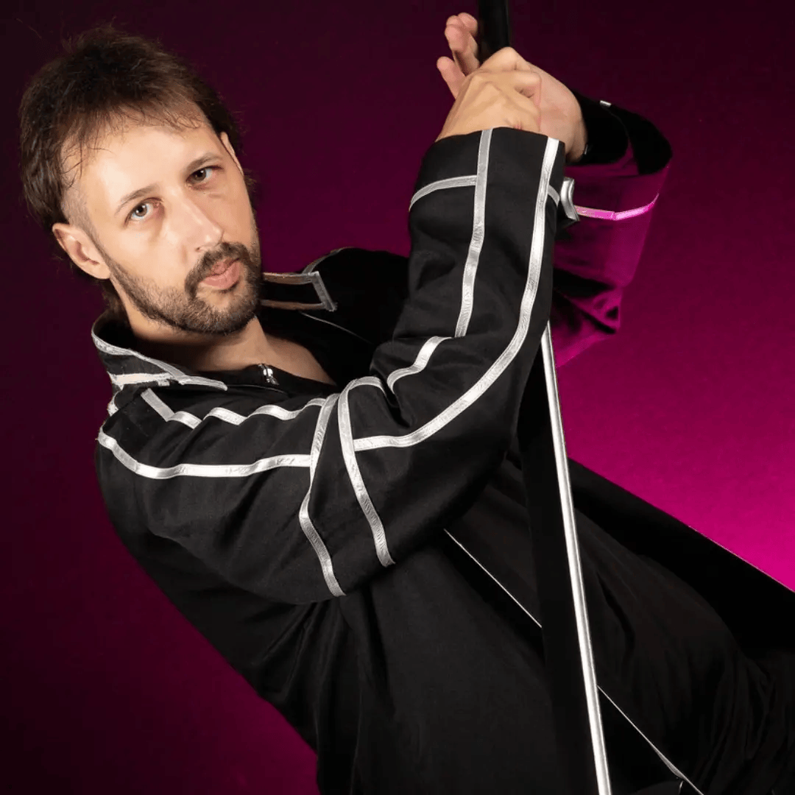

Streamer, cosplayer, créateur d'univers geek — passionné de sci-fi, de catch et de culture pop. Membre fondateur de Furioz Compagnie à Angers. Monitoring of traffic around NODE 54/D ALPHA revealed abnormalities. Logs available in DATABANK RT-552.